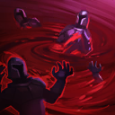

核心裝備
 無限寶珠
無限寶珠 死亡之帽
死亡之帽 海克斯科技火箭腰帶
海克斯科技火箭腰帶- 星河馳騁
 虛空之杖
虛空之杖

以下為本站 7.2d 校正後的標準配置；實戰仍需依敵方陣容調整。


技能優先：Q > E > W
額外生命會轉換成魔攻，魔攻也會增加額外生命，形成輸出與生存互相成長。｜7.2d：額外生命轉魔攻提高至 5%，魔攻轉生命提高至 150%。
吸取目標生命造成傷害並治療自己；累積後的強化版本傷害與回復更高。｜7.2d：腥紅脈搏額外傷害加成提高至 85%。
化為血池進入無法被選取狀態，緩速並傷害上方敵人，是最重要的保命技能。
消耗生命蓄力後對周圍敵人造成範圍傷害，蓄力越完整威脅越高。｜7.2d：最低傷害提高至 30/50/70/90＋35% 魔攻＋3% 最大生命。

感染範圍內敵人並提高其承受傷害，延遲爆發後造成傷害並治療弗拉迪米爾。
強化1技 → 蓄力3技 → 釋放3技 → 相位衝擊拉開
先用強化一技取得高額傷害與回復，再蓄力三技完成範圍換血；觸發相位衝擊後立刻撤回。
4技感染 → 蓄力3技 → 2技血池 → 釋放3技 → 1技
大絕先掛上增傷，蓄力三技時進入血池躲控制並接近後排，現身後補一技等待大絕治療結算。
蓄力3技 → 閃現進場 → 4技多人感染 → 釋放3技 → 1技 → 2技撤離
先蓄力再閃現可突然覆蓋後排，大絕盡量命中多人；一輪傷害完成後用血池退出集火區。
用一技補兵與回血，強化一技盡量命中英雄，但不要為了追擊走進敵方完整連段。血池與三技都會消耗生命，低血量時要降低使用頻率。
兩至三件裝後開始主動找側翼，大絕先命中多人再接三技範圍爆發。相位衝擊與鬼步用來黏住後排或安全拉出，血池不要提前用來清線。
等待敵方站位集中後進場，先以大絕提高後續傷害，再蓄力三技與血池躲開控制。完成第一輪後利用治療結算拉開，等待下一套技能二次進場。
對局名單是本站依英雄機制與目前配置整理的參考，不等同固定勝率。
中路優先處理爆發、控制與抗性問題；標準輸出核心不因單一威脅整套推翻。
觸發：對線或團戰有能直接貼近你的刺客／爆發核心，常在完成第一輪輸出前死亡。
女妖面紗補魔防並提供法術護盾，可阻斷對方第一段開戰。
骨甲降低接續傷害，適合換掉較貪輸出的副系符文。
觸發：敵方有多個關鍵硬控，會讓你無法安全站位或施放完整連段。
女妖面紗的法術護盾能先擋一次關鍵技能，讓法師保留施法空間。
堅毅提供韌性，受到硬控時也能短暫提高雙防。
觸發：敵方前排多，團戰需要你持續處理高生命目標，而不是只秒後排。
用百分比生命灼燒或魔法穿透提高長時間處理高血量／高魔防前排的效率。
觸發：敵方治療、吸血或回復讓你的消耗與爆發很難真正壓低血線。
黑魔禁書能由魔法傷害穩定施加重創，適合法師與軟輔處理大量治療。
觸發：敵方核心已經針對你的主要傷害類型堆高物防或魔防。
你不是隊伍主要穿透來源，或標準配置已經有足夠百分比穿透／削抗。
提醒：「坦克多」看的是高生命前排；「抗性高」則是對方已經明確堆高物防／魔防，兩種情境不一定相同。
7.2a 中路第四批正式版：技能名稱與核心機制依 Riot Games 台灣《激鬥峽谷》官方英雄資料校正；版本基準採官方 7.2 與 7.2a 更新公告，出裝、符文與對局方向參考 7.2a 當前中路環境後整合。Tier 維持本站既有 46 位中路正式名單評級。｜v62：完整套用阿璃中路固定母版，中路 46/46 全數完成。｜v87：2026-08-11 依 7.2b 當前召喚峽谷配置校正出裝、符文與召喚師技能。｜v90：7.2d：血色契約雙向轉換提高；鮮血轉換強化傷害與血之潮汐最低傷害提高。
本站於 2026-08-27 依 Patch 7.2d 重新檢查此配置。 Tier、出裝、符文與對局屬於 Wild Rift Guide 的整理與分析，不是 Riot Games 官方推薦；版本改動後會再依官方公告與實戰資料校正。